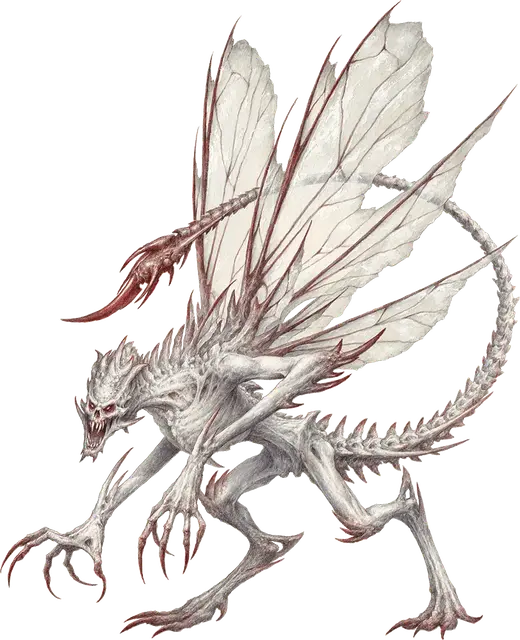

Костяной дьявол (Осилут)
Bone Devil
Большое Исчадие (Дьявол), законно-злое

Класс Доспеха 19 (природный доспех)
Хиты 142 (15к10 + 60)
Скорость 40 футов, летая 40 футов
| мод | спас | ||
|---|---|---|---|
| СИЛ | 18 | +4 | +4 |
| ЛОВ | 16 | +3 | +3 |
| ТЕЛ | 18 | +4 | +4 |
| мод | спас | ||
|---|---|---|---|
| ИНТ | 13 | +1 | +5 |
| МДР | 14 | +2 | +6 |
| ХАР | 16 | +3 | +6 |
Навыки Обман +7, Проницательность +6
Сопротивление урону холод; дробящий, колющий, рубящий от немагических атак, кроме нанесённых посеребрённым оружием
Иммунитет к урону огонь, яд
Иммунитет к состояниям отравление
Чувства тёмное зрение 120 футов, пассивное Восприятие 12
Языки Инфернальный, Телепатия 120 фт.
Опасность 9 (5000 опыта)
Бонус мастерства +4
Особенности
Дьявольское зрение. Магическая тьма не мешает темному зрению дьявола.
Сопротивление магии. Дьявол совершает с преимуществом спасброски от заклинаний и прочих магических эффектов.
Копья костяных дьяволов. Некоторые костяные дьяволы обладают следующими вариантами действий:
Мультиатака. Дьявол совершает две атаки: одну гвизармой, и одну жалом.
Гвизарма. Рукопашная атака оружием: +8 к попаданию, досягаемость 10 футов, одна цель. Попадание: Колющий урон 17 (2к12 + 4). Если цель — существо с размером не больше Огромного, оно становится схваченным (Сл высвобождения 14). Пока цель схвачена, дьявол не может использовать свою гвизарму против другой цели.
Вариант: Призыв дьявола. У некоторых дьяволов может быть действие, позволяющее им призывать других дьяволов.
Призыв дьявола (1/день). Дьявол выбирает, кого призвать, и пытается это сделать. Костяной дьявол получает 40% шанс призыва 2к6 игольчатых дьяволов (Спинагон) [spined devil] или одного костяного дьявола (Осилут) [bone devil].
Призванный дьявол появляется в свободном пространстве в пределах 60 футов от призывателя, и действует как его союзник, не имеющий способности призывать дьяволов. Он призывается на 1 минуту или пока призыватель не умрёт или действием его не отпустит.
Действия
Мультиатака. Дьявол совершает три атаки: две когтями, и одну жалом.
Коготь. Рукопашная атака оружием: +8 к попаданию, досягаемость 10 футов, одна цель. Попадание: Рубящий урон 8 (1к8 + 4).
Жало. Рукопашная атака оружием: +8 к попаданию, досягаемость 10 футов, одна цель. Попадание: Колющий урон 13 (2к8 + 4) плюс урон ядом 17 (5к6), и цель должна преуспеть в спасброске Телосложения Сл 14, иначе станет отравленной на 1 минуту. Цель может повторять этот спасбросок в конце каждого своего хода, оканчивая эффект на себе при успехе.
Описание
Движимые ненавистью, вожделением и завистью, костяные дьяволы служат жестокими надсмотрщиками Девяти Преисподних. Они принуждают более слабых дьяволов к работе, получая особое наслаждение, когда их соперников понижают в ранге. Вместе с тем они долго продвигаются по иерархии и люто завидуют своим начальникам, выслуживаясь перед ними, хоть их это и злит.
Костяные дьяволы выглядят как гуманоидная оболочка с высохшей кожей, натянутой на скелетный остов. У них устрашающий череп вместо головы и хвост скорпиона, и неприятный запах разложения висит в воздухе вокруг них. Хотя их когти наносят разрушительный урон в бою, костяные дьяволы также орудуют костяными копьями с крюками, которыми они ловят врагов перед тем как ударить их ядовитым жалом.
См. дополнительно статью: "Бестиарий: Дьяволы"